ECG Blog #463 — Nhiều điều cần giải thích ...
Tôi được gửi điện tâm đồ trong Hình-1 — chỉ được cho biết rằng bản ghi này được ghi trước khi sốc điện chuyển nhịp chủ động cho một bệnh nhân đã bị cuồng nhĩ (Atrial Flutter, AFlutter) dai dẳng từ lâu.
- Điện giải đồ huyết thanh bình thường tại thời điểm sốc điện chuyển nhịp.
- Bệnh nhân dung nạp tốt việc sốc điện chuyển nhịp — và được xuất viện ngay trong ngày hôm đó. (Bản ghi sau sốc điện chuyển nhịp sẽ được trình bày ngay sau đây trong Hình-3).
- Đáng tiếc — các chi tiết lâm sàng khác của ca hôm nay không được biết (cũng không biết bệnh nhân có thể đang dùng những thuốc gì).
CÂU HỎI:
- Đọc nhịp ban đầu của ca hôm nay như thế nào? (trình bày trong Hình-1).
- Tại sao QRS rộng?

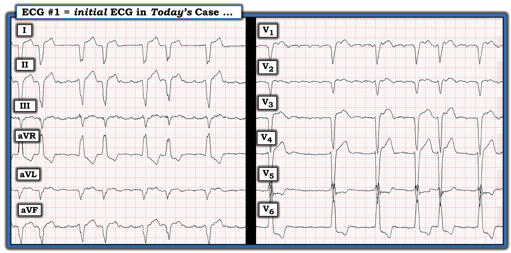
Suy nghĩ của tôi về điện tâm đồ trong Hình-1:
Các chuyển đạo chi và các chuyển đạo ngực trong Hình-1 cho thấy 2 dải nhịp ngắn (~5 giây) và trông có phần khác nhau.
- Có nhịp theo nhóm (group beating) rõ ràng ở các chuyển đạo chi (các nhóm 2 nhát với chu kỳ dài-ngắn xen kẽ) — nhưng không có kiểu tổ chức như vậy ở các chuyển đạo ngực.
- Hoạt động nhĩ đều và rất nhanh thấy được ở một số chuyển đạo ngực và chuyển đạo chi (thấy rõ nhất ở chuyển đạo II — như được đánh dấu bằng các mũi tên ĐỎ trong Hình-2). Khoảng P-P dài hơn 1 ô lớn một chút — tương ứng với tần số nhĩ ngay dưới 300/phút (và xác định nhịp nền là cuồng nhĩ).
- Như thường gặp với cuồng nhĩ — sóng cuồng nhĩ thấy rõ ở một số chuyển đạo (tức là các chuyển đạo II,III,aVF; V1,V2) — nhưng không rõ ở các chuyển đạo khác.
- QRS rộng — với hình dạng phù hợp với dẫn truyền kiểu LBBB (Left Bundle Branch Block – blốc nhánh trái) ở các chuyển đạo ngực (chủ yếu âm ở các chuyển đạo ngực phía trước — và dương hoàn toàn ở chuyển đạo V6).
CÂU HỎI:
- Tại sao có nhịp theo nhóm ở các chuyển đạo chi?
- Tại sao không có nhịp theo nhóm ở các chuyển đạo ngực?
- Nếu có dẫn truyền kiểu LBBB ở các chuyển đạo ngực — Tại sao QRS lại âm hoàn toàn ở chuyển đạo I?

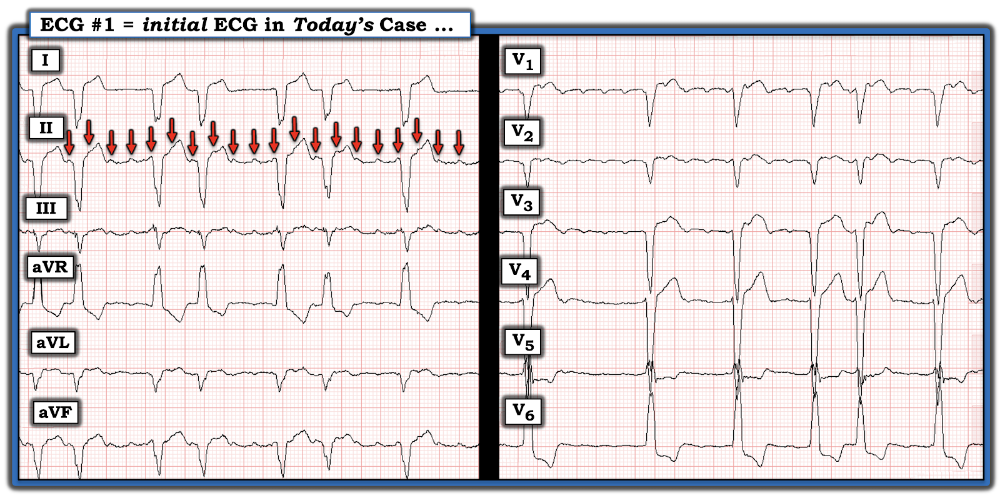
Ca bệnh tiếp diễn:
Sau đó tôi xem điện tâm đồ ghi lại được ghi sau sốc điện chuyển nhịp.
- Điện tâm đồ ghi lại này trong Hình-3 có trả lời được một số câu hỏi ở trên không?

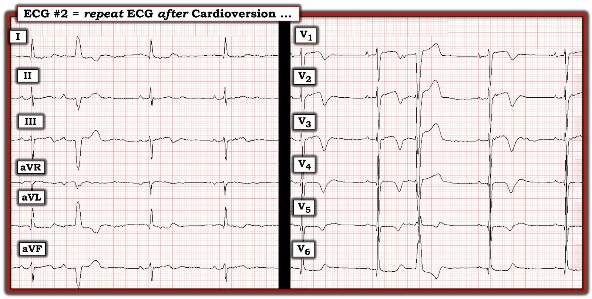
Suy nghĩ của tôi về điện tâm đồ ghi lại trong Hình-3:
Nhịp xoang đã được phục hồi sau sốc điện chuyển nhịp. Tần số tim chung chậm — và QRS của phần lớn các nhát nay đã hẹp.
- Để dễ đọc Hình-3 — tôi đã đánh số các nhát và đánh dấu hoạt động nhĩ trong Hình-4.

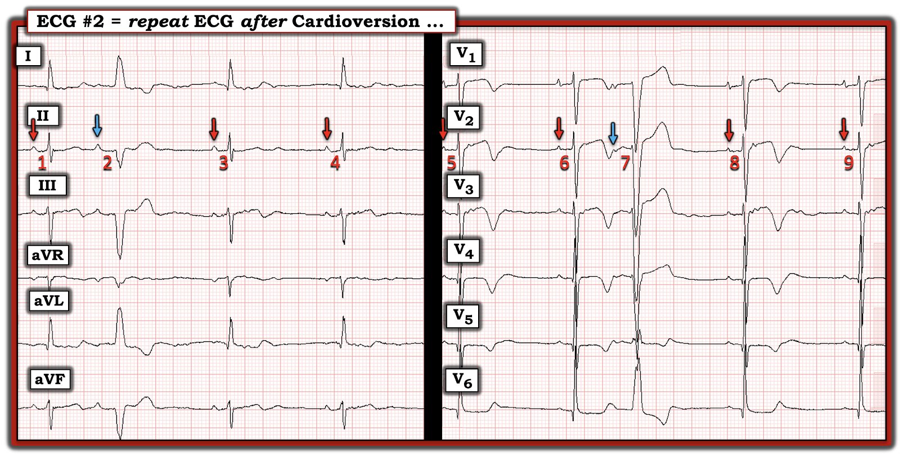
Bản ghi sau chuyển nhịp:
Các chuyển đạo chi và chuyển đạo ngực trong Hình-4 được ghi liên tục.
- Các mũi tên ĐỎ đánh dấu sóng P xoang trong nhịp chậm này (tần số tim hơi dưới 50/phút).
- Các mũi tên XANH đánh dấu sự hiện diện của 2 PAC (Premature Atrial Contractions – ngoại tâm thu nhĩ). Điều đáng chú ý — phức bộ QRS rộng trong Hình-4 chỉ ở 2 PAC này ( = nhát #2 và #7). Lưu ý rằng hình dạng QRS của cả hai nhát sớm này đều phù hợp với dẫn truyền kiểu LBBB (sóng R một pha dương hoàn toàn ở chuyển đạo I và aVL với nhát #2 — còn với nhát #7, QRS chủ yếu âm ở các chuyển đạo ngực cho đến sóng R dương hoàn toàn ở chuyển đạo V6).
- ĐIỂM THEN CHỐT (PEARL) #1: Việc QRS rộng liên tục trong lúc nhịp nhanh hơn (tức là khi bệnh nhân đang cuồng nhĩ) — nhưng nay trong Hình-4 lại cho thấy phức bộ QRS bình thường (hẹp) với nhịp nền sau chuyển nhịp là nhịp chậm xoang, ngoại trừ 2 nhát đến sớm (nhát #2 và 7, là các PAC) — gợi ý rằng lý do QRS giãn rộng trên điện tâm đồ ban đầu nhiều khả năng phản ánh dẫn truyền lệch hướng kiểu LBBB liên quan tần số (Xem ECG Blog #242 để biết thêm về BBB liên quan tần số).
- ĐIỂM THEN CHỐT (PEARL) #2: Bạn có để ý rằng trên bản ghi sau chuyển nhịp có ST dạng vòm (coving) kèm sóng T đảo ngược khá sâu ở các chuyển đạo ngực không? Xét bệnh sử (tức là bệnh nhân này có tiền sử cuồng nhĩ lâu năm — nhưng theo những gì chúng ta biết, không đau ngực) — thay đổi ST-T này nhiều khả năng phản ánh hiệu ứng "trí nhớ" (memory), trong đó thường có các bất thường ST-T kéo dài hàng giờ (đến vài ngày) sau một thời gian dài nhịp nhanh bền bỉ. (Cần đối chiếu lâm sàng, và có thể cả nồng độ Troponin — để xác định xem sóng T đảo ngược sâu này có cần đánh giá thêm hay không).
CÂU HỎI:
Hãy XEM Hình-5 — trong đó tôi đặt điện tâm đồ ban đầu cạnh điện tâm đồ ghi lại sau sốc điện chuyển nhịp.
- Phép so sánh trong Hình-5 có xác nhận vì sao — dù QRS giãn rộng với dẫn truyền kiểu LBBB ở các chuyển đạo ngực của điện tâm đồ ban đầu — phức bộ QRS ở chuyển đạo I của bản ghi này lại âm hoàn toàn không? (GỢI Ý: Hãy xem thêm điều gì xảy ra với hình dạng QRS ở chuyển đạo aVR của điện tâm đồ #1 so với hình ảnh chuyển đạo aVR ở điện tâm đồ #2).
- T.B. (P.S.): Bạn đã tìm ra vì sao có nhịp theo nhóm ở các chuyển đạo chi của điện tâm đồ ban đầu chưa?

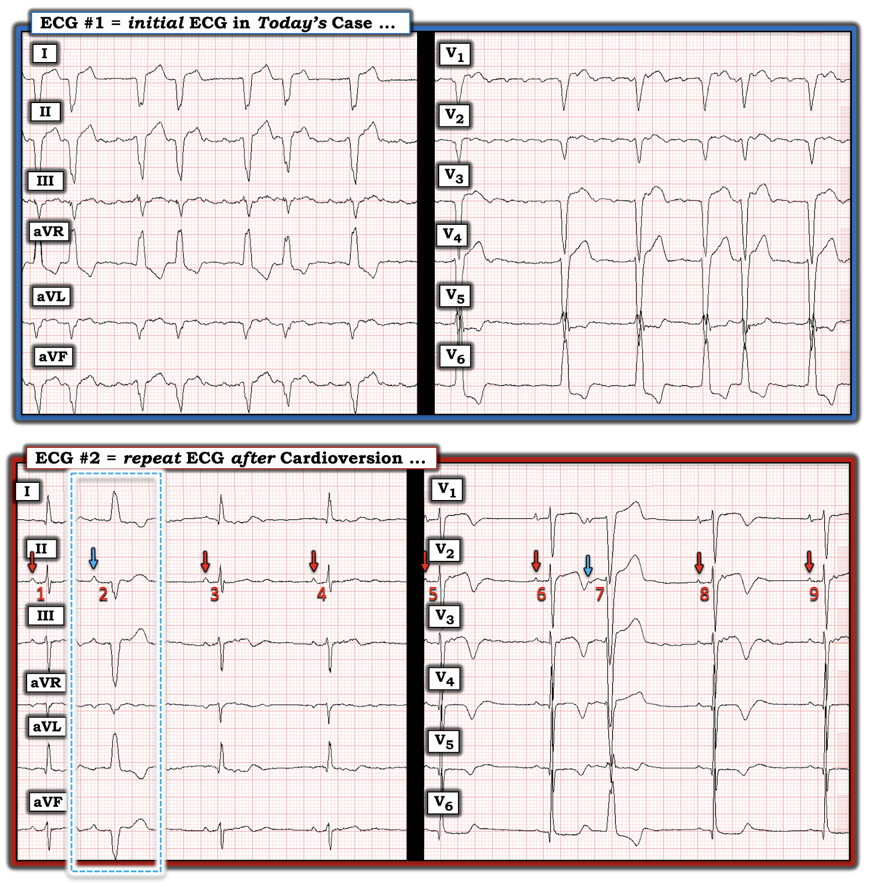
TRẢ LỜI:
- Trả lời câu hỏi thứ 2 trước — với cuồng nhĩ, thường gặp nhịp theo nhóm giống như thấy ở các chuyển đạo chi của điện tâm đồ #1. Như tôi sẽ minh họa ngay sau đây bằng việc dựng giản đồ bậc thang từng bước (trong Hình-8 đến -13) — nhịp theo nhóm này thường là kết quả của dẫn truyền Wenckebach hai tầng ra khỏi nút AV. Nó thường không phải là kết quả của một blốc AV bệnh lý — vì dẫn truyền AV 1:1 bình thường thường trở lại khi nhịp xoang được phục hồi.
- Về việc không có nhịp theo nhóm ở dải nhịp 5 giây của các chuyển đạo ngực — tôi đọc đơn giản là cuồng nhĩ với đáp ứng thất thay đổi. Điều này có lẽ xảy ra do tỷ lệ dẫn truyền thay đổi qua hai tầng trong nút AV.
- Cuối cùng — phức bộ QRS âm hoàn toàn ở chuyển đạo I của điện tâm đồ ban đầu là kết quả của đảo điện cực LA-RA!
===============================
CÂU HỎI:
- Làm sao chúng ta biết có đảo điện cực ở điện tâm đồ #1?
TRẢ LỜI (Xem các điện tâm đồ trong Hình-5):
Sự cố kỹ thuật đảo điện cực phổ biến hơn nhiều so với người ta thường nghĩ. Trong các kiểu đảo điện cực — phổ biến nhất (vượt xa các kiểu khác) là nhầm lẫn giữa điện cực LA (Left Arm – tay trái) và RA (Right Arm – tay phải). Khi điều này xảy ra — chuyển đạo I giống hình ảnh QRST bình thường thấy ở chuyển đạo aVR — và ngược lại.
- ĐIỂM THEN CHỐT (PEARL) #3: Chuyển đạo I chuẩn là một chuyển đạo bên trái. Vì tim nằm lệch về bên trái — hoạt động điện chiếm ưu thế hầu như luôn hướng về bên trái. Ngay cả khi có nhồi máu vùng bên diện rộng — cũng hiếm khi thấy sóng Q chiếm ưu thế ở chuyển đạo I. Thế nhưng ở điện tâm đồ #1 — phức bộ QRS âm hoàn toàn ở chuyển đạo I. Dù điều này có thể xảy ra (tức là với một rối loạn dẫn truyền rất bất thường) — Hãy nghĩ đến tim sang phải hoặc đảo điện cực LA-RA nếu bạn thấy QRS âm hoàn toàn ở chuyển đạo I.
- T.B. (P.S.): Chúng ta biết QRS âm hoàn toàn ở chuyển đạo I không phải do tim sang phải — vì tăng tiến sóng R ở các chuyển đạo ngực của điện tâm đồ #1 đúng hệt như mong đợi với dẫn truyền kiểu LBBB (và tăng tiến sóng R sẽ bị đảo ngược nếu có tim sang phải).
Thêm bằng chứng xác nhận đảo điện cực LA-RA ở điện tâm đồ #1:
- Chuyển đạo aVR là một chuyển đạo bên phải. Khi không có RVH rõ rệt — người ta không mong đợi thấy QRS dương hoàn toàn như ở chuyển đạo aVR của điện tâm đồ #1. Nhưng nếu chuyển đạo I trông giống như chuyển đạo aVR (và chuyển đạo aVR trông giống như chuyển đạo I) — thì điện tâm đồ #1 sẽ trông đúng như mong đợi ở bệnh nhân này, người có dẫn truyền kiểu LBBB điển hình ở các chuyển đạo ngực.
- Chuyển đạo V6 là một chuyển đạo ngực bên trái. Vì chuyển đạo V6 dương hoàn toàn ở điện tâm đồ #1 — chúng ta không mong đợi phức bộ QRS ở chuyển đạo I (chuyển đạo bên trái) lại âm hoàn toàn!
- Bằng chứng cuối cùng cho đảo điện cực LA-RA có ở điện tâm đồ #2. Lưu ý rằng nhát #2 (là PAC thứ 1 trên bản ghi này, dẫn truyền lệch hướng kiểu LBBB) — nay có hình dạng LBBB điển hình, với QRS dương hoàn toàn ở cả chuyển đạo I lẫn chuyển đạo aVL (trong hình chữ nhật chấm XANH ở Hình-5).
===============================
Điện tâm đồ #1 sẽ trông như thế nào NẾU không có đảo điện cực LA-RA?
- Tôi điểm lại nhiều ví dụ khác về đảo điện cực trong ECG Blog #396. Như các ví dụ này cho thấy — chúng ta có thể "hiệu chỉnh" ảnh hưởng của từng kiểu đảo điện cực lên điện tâm đồ (Xem Hình-6):

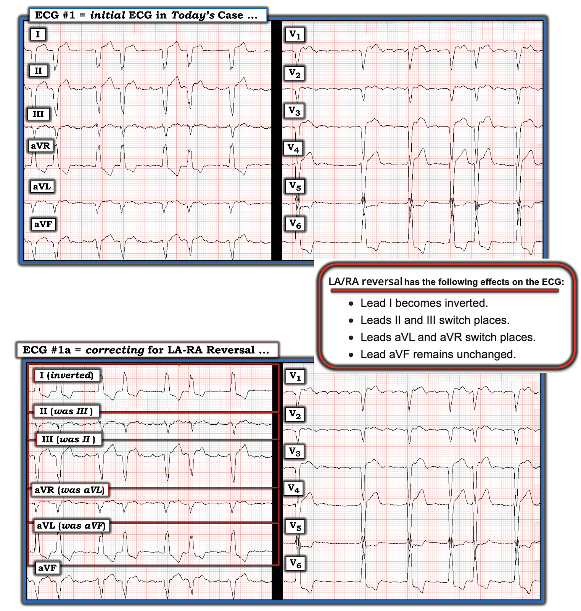
Và bây giờ thay bằng hình ảnh mà điện tâm đồ #1 lẽ ra đã có nếu tất cả điện cực chi được đặt đúng vị trí — Hãy XEM Hình-7 !

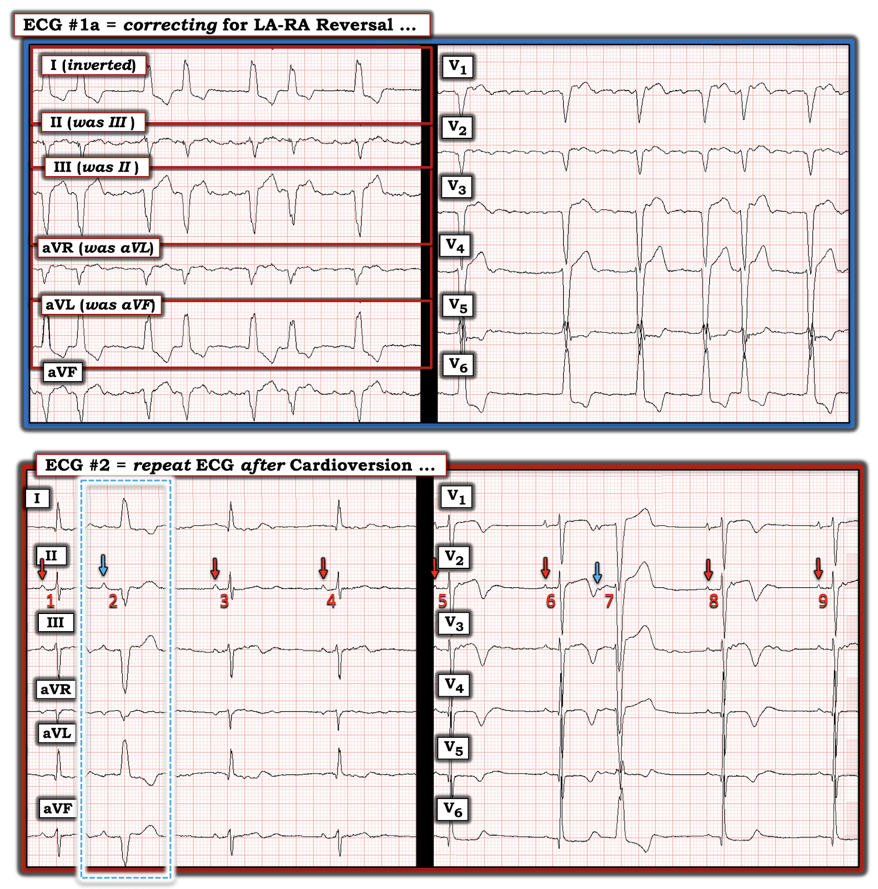
===============================
Minh họa bằng giản đồ bậc thang: Wenckebach hai tầng của ca hôm nay ...
Tôi kết thúc ca hôm nay bằng việc dựng giản đồ bậc thang cho kiểu nhịp theo nhóm mà chúng ta thấy ở các chuyển đạo chi của điện tâm đồ #1.
- Hình-8 là nhịp mà tôi sẽ phân tích. Đây là dải nhịp chuyển đạo II dài 5 giây với các sóng cuồng nhĩ được đánh dấu bằng mũi tên ĐỎ (lấy từ Hình-2).

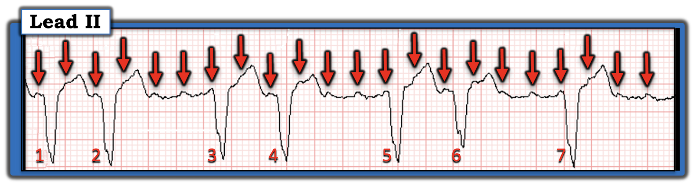

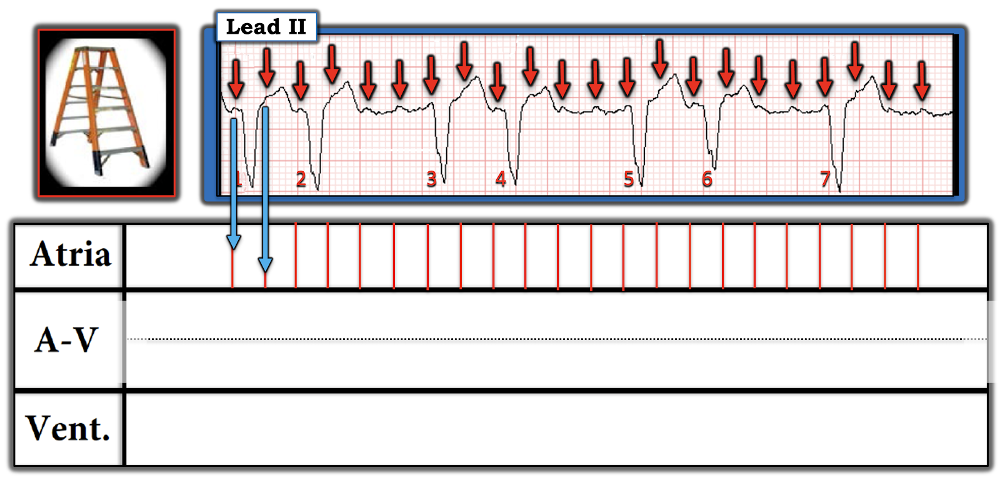
= = = = =
LƯU Ý: Vì tôi nghi ngờ có blốc AV hai tầng trong nút AV — tôi đã chia Tầng Nút AV thành 2 phần (bằng cách vẽ một đường chấm ĐEN nằm ngang).

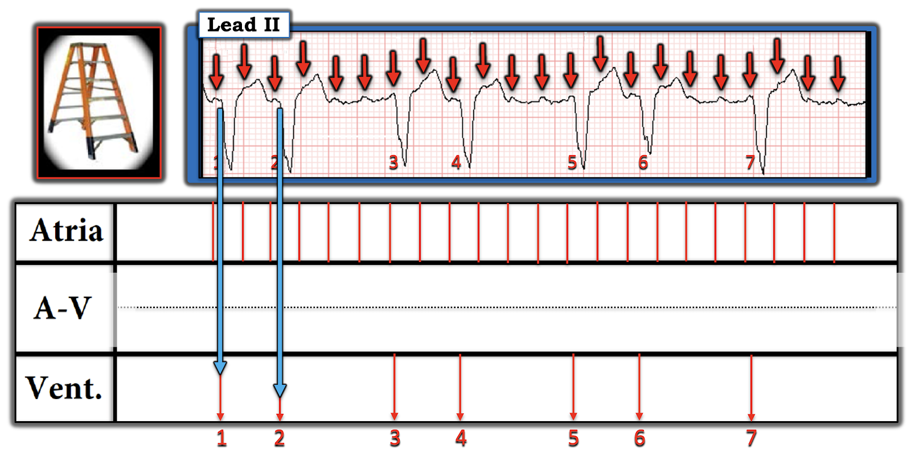
Các mũi tên XANH chỉ điểm khởi đầu của mỗi phức bộ QRS, làm mốc tham chiếu cho từng phức bộ QRS trên bản ghi này.
= = = = =
Điểm MẤU CHỐT: "Phần DỄ" trong việc dựng phần lớn các giản đồ bậc thang gồm 2 BƯỚC đầu tiên này (được trình bày trong Hình-9 và -10). Giờ thử thách mới bắt đầu — khi cố gắng "giải" giản đồ bậc thang bằng cách tìm ra những sóng P nào (trong ca này là sóng cuồng nhĩ) ở Tầng Nhĩ được dẫn truyền xuống thất.

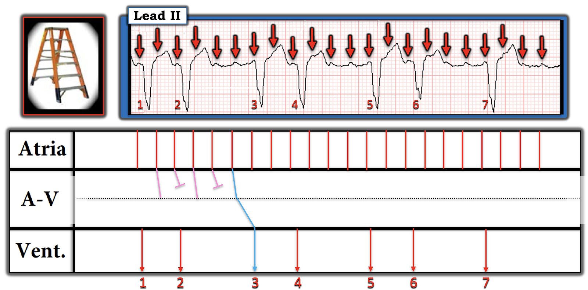
= = = = =
Điểm MẤU CHỐT: Do "dẫn truyền ẩn" — các sóng cuồng nhĩ nằm rất gần một phức bộ QRS thường không thể dẫn truyền xuống thất. Ví dụ — mũi tên ĐỎ thứ 3 trong Hình-11 này khó có khả năng được dẫn truyền. Do đó — các sóng cuồng nhĩ trước và sau mũi tên ĐỎ thứ 3 này có lẽ có thể dẫn truyền qua ít nhất là tầng Nút AV trên (các đường HỒNG ở tầng Nút AV trên này).
Điều này để lại cho tôi đường đi vẽ màu XANH là con đường dẫn truyền hợp lý nhất để tạo ra nhát #3.

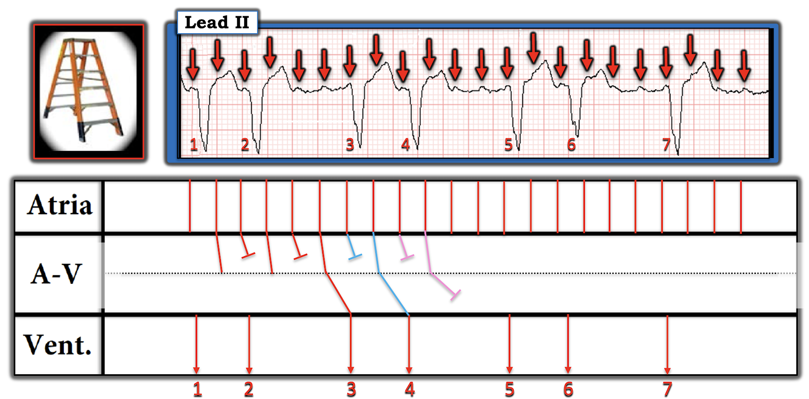

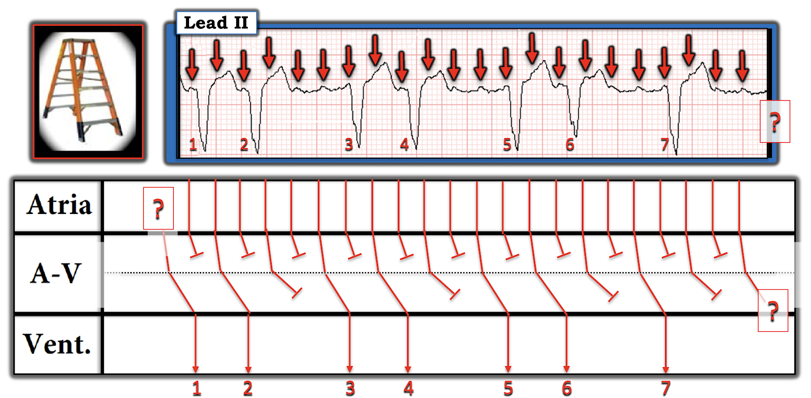
LƯU Ý: Kiểu mà chúng ta thấy ở 6 nhát đầu thay đổi ở nhát #7 — vì không có nhát thứ 2 trong nhóm cuối cùng này.
===============================
Cuối cùng
ĐIỂM THEN CHỐT (PEARL) #4:
Cần nhớ: Rất thường gặp nhịp theo nhóm với cuồng nhĩ — và — thường có blốc AV hai tầng đối với các sóng cuồng nhĩ nhanh này khi ra khỏi nút AV.
- Ngay cả khi không cần vẽ giản đồ bậc thang — chúng ta vẫn có thể nhanh chóng nhận ra dẫn truyền Wenckebach hai tầng ra khỏi nút AV khi thấy nhịp theo nhóm đi kèm các sóng cuồng nhĩ không được dẫn truyền liên tiếp (như thấy rõ trong Hình-8) — đặc biệt khi có các khoảng PR giống hệt nhau trước nhiều nhát.
- "Tin tốt" — là các sóng cuồng nhĩ không được dẫn truyền liên tiếp này thường không đại diện cho một dạng blốc AV cố định (bệnh lý)! Thay vào đó — dẫn truyền AV 1:1 bình thường thường trở lại khi cuồng nhĩ được chuyển về nhịp xoang.
==========================================
Lời cảm ơn: Xin cảm ơn Samuel K. Sørensen (ở Copenhagen, Đan Mạch) đã chia sẻ ca bệnh và bản ghi này.
==========================================

==============================
Các bài ECG Blog liên quan đến ca hôm nay:
- ECG Blog #205 — Điểm lại Cách tiếp cận hệ thống của tôi để đọc điện tâm đồ 12 chuyển đạo.
- ECG Blog #185 — Điểm lại Hệ thống đọc nhịp của tôi, sử dụng Cách tiếp cận Ps, Qs, 3R.
- ECG Blog #188 — Điểm lại cách đọc và vẽ Giản đồ bậc thang (kèm LIÊN KẾT tới hơn 100 ca giản đồ bậc thang — nhiều ca có minh họa tuần tự từng bước).
- ECG Blog #264 — Điểm lại Đảo điện cực LA-RA.
- ECG Blog #396 — xem danh sách các kiểu đảo điện cực ...
- ECG Blog #259 — Điểm lại giản đồ bậc thang từng bước ở một bệnh nhân có blốc AV hai tầng.
- ECG Blog #243 — Điểm lại một ca cuồng nhĩ với Wenckebach hai tầng ra khỏi nút AV.
- ECG Blog #226 — Phân tích một Ca bệnh phức tạp (kèm một ECG Video Pearl dài 11:00 phút hướng dẫn bạn từng bước dựng một giản đồ bậc thang có dẫn truyền Wenckebach và blốc hai tầng trong nút AV).
- ECG Blog #416 — Ca bệnh OMI cấp với minh họa từng bước về Wenckebach AV hai tầng.
- ECG Blog #347 và Blog #439 — thêm các ví dụ về blốc AV hai tầng .

PHẦN BỔ SUNG (ngày 3 tháng 1 năm 2025):

ECG Media PEARL #71 (5:45 phút Audio) — Điểm lại hiện tượng Wenckebach hai tầng ra khỏi nút AV (CÁCH nhận ra hiện tượng này — và cách phân biệt với Mobitz II).